|
|
|
Garden & Other Hoes |


Edge Angle
I recommend sharpening the edge closer to the user as it makes the angle for using the tool easier, i.e., the user can stand more upright. If the other edge is sharpened, the user will have to bend down to use it, and the joy of gardening will be lost.
Scarifiers (e.g., shuffle hoes) are used to scrape or scarify the surface rather than dig up the soil. These could be sharpened to a more acute angle as there is minimal chance of encountering any underground rocks. Weeds which grow from seed, like lambsquarters, chickweed, purslane, and some other grasses, should be removed with such a hoe.
The sharpener should consider this and might reduce the angle for α by 2° to 5°, but in any case, the angle should not be reduced below 25°.
Deep Diggers are used to attack perennial weeds and need a different sharpening approach. For weeds like burdock, yellow dock, and quackgrass that have either strong taproot systems or rhizomatous roots, you'll need to get a bit dirty. After a rain shower and when the soil is moist, get down onto the ground and dig them out using a tool like a CobraHead hoe.
The sharpener should consider this and should increase the angle for α by 2° to 5°, but in any case, the angle should not be reduced below 40°.
Some hoes have more than one edge to be sharpened. In those cases, each edge can be sharpened at a different angle, and thusly there is more than one angle specified on this page (i.e., α1, α2, & α3). The use of differing angles is not necessary, but is recommended, and notes are given for the recommendations.
A 6" smooth cut machinist’s hand file is useful to carry in your gardening tools box. Use it to resharpen the hoe as needed throughout the gardening activity.
The best fertilizer in the garden is the gardener's shadow.
Unknown
In the pictures in the table below (except for the hoop hoe), the bottom side of the picture is the user's side of the hoe.
| General Guidelines | |||||
|---|---|---|---|---|---|
| Purpose | User Stroke | α1 | α2 | α3 | Notes |
|
Cape Cod Weeder
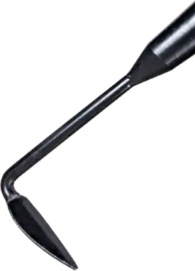 |
Pull | 25° | 35° | n/a |

This is a baby version of a Warren Hoe with a head which is only about 2” wide. This hoe has two edges to be sharpened, opening up some nice opportunities for the gardener as one side can be at a different angle than the other. As with the Warren hoe, sharpening one side at the recommended 25° and the other at 35° makes it a more versatile tool. These can be found with a long handle for use when standing, or with a shorter handle for use when kneeling or seated. If sharpening the shorter handled hoe, consider sharpening the under side if the angle for use of this hoe merits it. Depending on the user's handedness (left vs. right), the values for α1 & α2 could be swapped for easier use. Also known as or called a Drill Hoe or Pointed Cultivator Hoe. |
|
Cobra Head Hoe
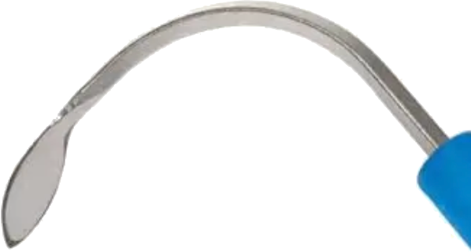 |
Swung | 35° | 35° | n/a |
This tool gets swung by the user to dig up problematic weeds. This hoe has two edges to be sharpened, but I recommend keeping them the same. These can be found with a long handle for use when standing, or with a shorter handle for use when kneeling or seated. The shorter handled version can have hiver values, up to 40°, but the longer handled vershion should not have such a dull angle. |
|
Garden Hoe
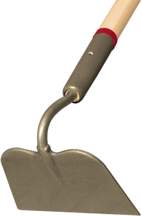 |
Pull | 25° | n/a | n/a |
This is a good selection for weeding in the garden. It is sharp enough that it shears the weeds well at the ground level. This could be as high as 30°; however that is not usually necessary. Also known as or called a Drag Hoe or Floral Hoe. |
|
Grubbing Hoe
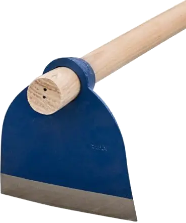 |
Down Swing
& Pull |
45° | n/a | n/a |
This is a heavy-duty tool used to break up soil. Depending on the user's area, it may need to have an edge approaching 60° (especially if the ground is rocky or highly compacted). These can be found with a long handle for use when standing, or with a shorter handle for use when kneeling or seated. If sharpening the shorter handled hoe, consider sharpening the under side if the angle for use of this hoe merits it. |
|
Hoop Hoe
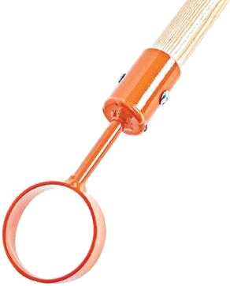 |
Pull & Push | 25° | 35° | n/a |

The hoop hoe can be sharpened with a single angle, or if the sharpener is adventurous then the sides can be at a different angle (e.g., 30°-35°), and those edges blended together. This would be a good idea if the hoe is used for purposes other than merely weeding. The higher angle will help keep it from dulling quickly when breaking up dirt clods or taking out bigger weeds. These can be found with a long handle for use when standing, or with a shorter handle for use when kneeling or seated. If sharpening the shorter handled hoe, keep the same sharpening approach as for the longer handled version (sharpen the inside of the curve). It is important to not sharpen too far up on the circle as that part is used to push plants back when hoeing. |
|
Mortar Hoe
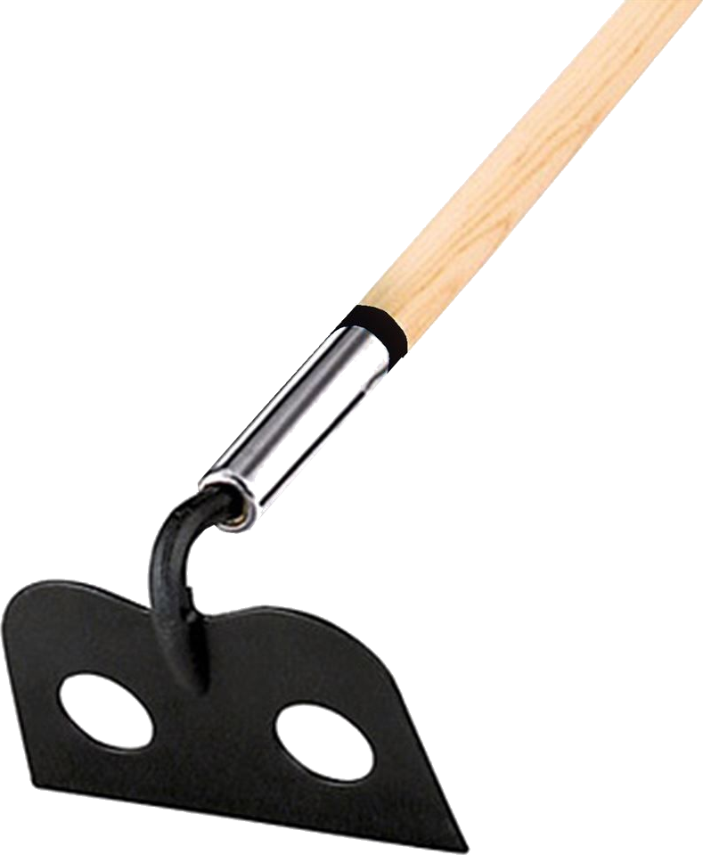 |
Pull & Push | 45° | n/a | n/a |

This is a good selection if the hoe is used for purposes other than weeding. The higher angle will help keep it from dulling quickly. This could be as high as 60°. Consider this approach if using your hoe for activities such as mixing concrete in your wheel barrow. Mortar hoes usually have holes in the blade to allow the material to flow through it, making the mixing easier. Ensure these are clear of dried up concrete or other obstructions. Also known as or called a Mason’s Hoe, or Plaster’s Hoe |
|
Onion Hoe,
& other 3-Sided Hoes 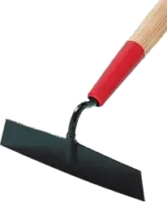 |
Pull & Side | 25° | 25° | 35° |

These hoes have 3 sides which get sharpened.
These can be found with a long handle for use when standing, or with a shorter handle for use when kneeling or seated. If sharpening the shorter handled hoe, consider sharpening the under side if the angle for use of this hoe merits it. Depending on the user's handedness (left vs. right), the values for α2 & α3 could be swapped for easier use. Also known as or called a Tobacco Hoe |
|
Scuffle Hoe
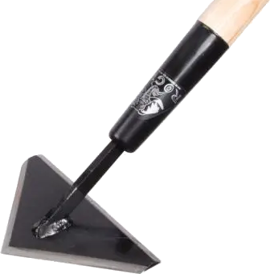 |
Pull & Push | 25° | 25° | 30° |
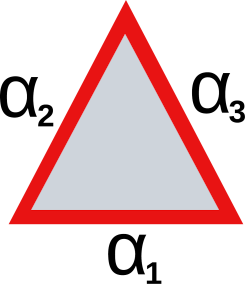
One style of this hoe has 3 sides in a triangular shape, and all 3 sides can be sharpened differently.
Depending on the user's handedness (left vs. right), the values for α2 & α3 could be swapped for easier use. Also known as or called a Floral Scuffle Hoe

|
|
Stirrup Hoe
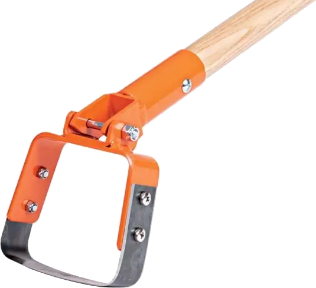 |
Pull & Push | 30° | 25° | n/a |
These hoes have 2 sides which can be sharpened differently. If the gardener desires two separate angles, these are recommended
Some gardeners choose to keep the push and pull sides the same as they use a scarifing or shuffling motion to weed the garden or walk. These can be found with a long handle for use when standing, or with a shorter handle for use when kneeling or seated. If sharpening the shorter handled hoe, consider sharpening the under side if the angle for use of this hoe merits it. Also known as or called a Dutch Hoe |
|
Swoe
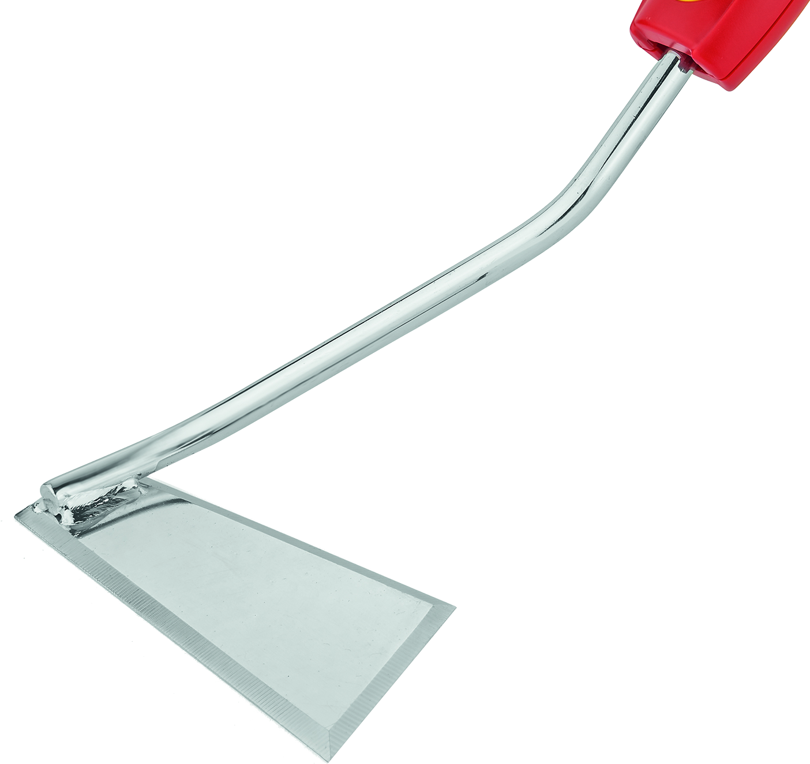 |
Pull, Push, & Side | 30° | 25° | 25° |

These hoes have 3 sides in a form of a triangular shape, and all 3 sides can be sharpened differently. There is a triangular shape towards the user, and a flat side away from the user.
Depending on the user's handedness (left vs. right), the values for & α2 could be swapped for easier use. |
|
Warren Hoe
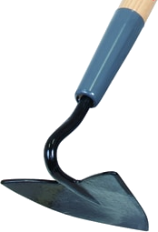 |
Pull | 25° | 35° | n/a |
Warren hoes are typically used for weeding or creating a furrow for planting. This hoe has two edges to be sharpened, opening up some nice opportunities for the gardener as one side can be at a different angle than the other. My experience has been that sharpening one side at the recommended 25° and the other at 35° makes it a more versatile tool. Depending on the user's handedness (left vs. right), the values for α1 & α2 could be swapped for easier use. |
New hoes I have purchased have an angle (α) of 90°. Therefore, initial shaping of the edge is to be expected.
If you use an angle grinder, consider using a 120 grit flap disc. A metal grinding wheel may be needed for large-scale shaping. In either case, be sure to not overheat the metal too much: it weakens the metal.
Use a machinist’s hand file.
Some pictures are courtesy A.M. Leonard Horticultural Tool & Supply.